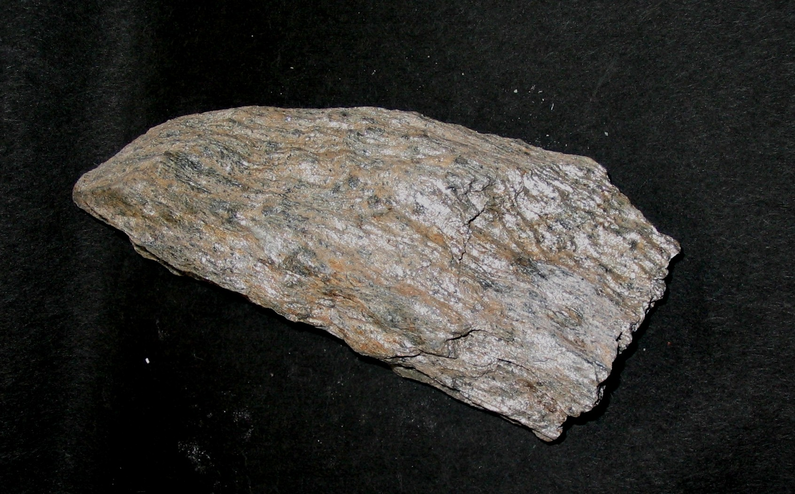
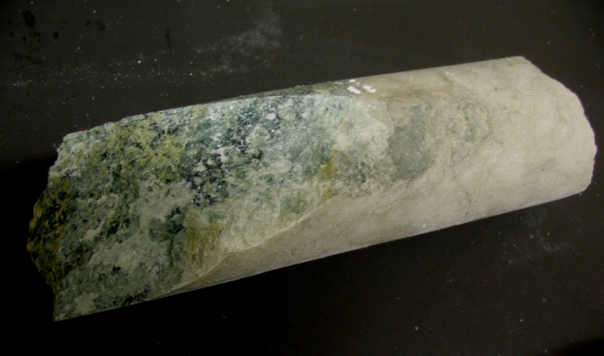
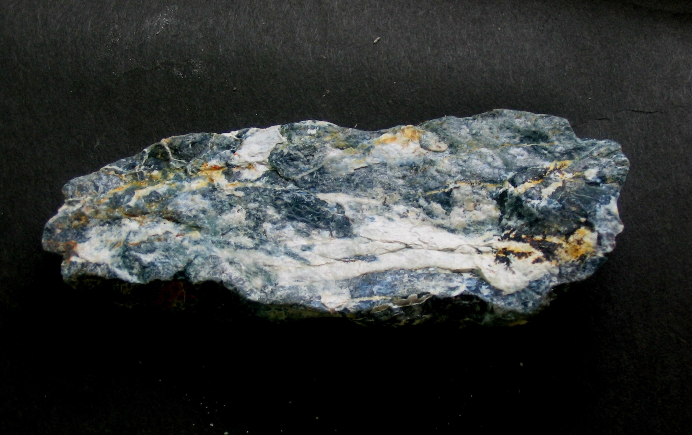

|  https://ettchk.wordpress.com/2018/01/16/3278/ |
是經由變質作用所形成的。原岩受到熱和壓力的作用，其內部的物理和化學性質逐漸變化。原岩可以是沉積岩、火成岩或是變質岩。是地球上已有的岩石，經地底高溫高壓所形成的。 |
|---|---|
|  https://ettchk.wordpress.com/2018/01/16/3278 |
 https://ettchk.wordpress.com/2018/01/16/3278 |